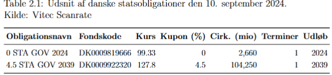
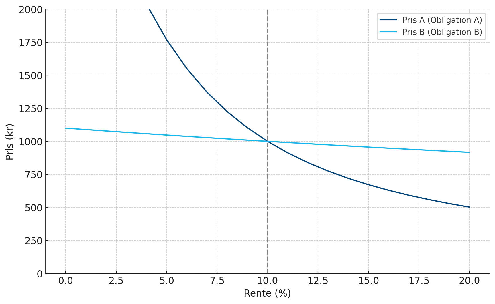

Obligationsmarkedet
Bag om obligationstyperne - teori og praksis
Introduktion til obligationer
Læringsmål
- Kende de centrale obligationstyper og deres cashflows (stående, annuitet, serie)
- Prisfastsætte nulkupon via nutidsværdi og forklare sammenhængen kurs ↔︎ rente ↔︎ løbetid
- For kuponbærende: anvende prisformlen og forstå at YTM normalt findes numerisk
- Skelne clean vs. dirty price og beregne vedhængende rente (valør, termin)
- Forklare reinvesteringsrisiko og hvad der skal til for at realisere YTM
- Vurdere prissensitivitet ift. løbetid/kupon og forbinde intuitionen til varighed
Hvad er en obligation?
- En af de vigtigste finansielle instrumenter til kapitalrejsning
- Værdien afhænger direkte af renten → tæt kobling mellem renter og obligationspriser
- Definition: gældsinstrument hvor udstederen låner penge fra investorer mod:
- periodiske rentebetalinger (kuponer)
- tilbagebetaling af hovedstolen ved udløb
- periodiske rentebetalinger (kuponer)
Centrale begreber
- Terminer: antal betalinger pr. år
- Hovedstol: det oprindeligt lånte beløb
- Afdrag / afdragsprofil: tilbagebetaling af hovedstol over tid
- Ydelse: samlet betaling pr. termin (renter + afdrag)
Obligationstyper
Stående lån
- Rentebetalinger løbende, hovedstol først ved udløb
- Klassisk eksempel: statsobligationer
- Stabil cashflow for investor, men udsteder har stor betaling til sidst
Annuitetslån
- Låntager betaler fast ydelse hver termin
- Afdrag stiger over tid, mens renteandel falder
- Giver stabil belastning for låntager

Serielån
- Konstant afdrag pr. termin → faldende rente over tid
- Høj ydelse i starten, lavere mod slutningen
- Begrænset efterspørgsel i praksis
Betalingsstrømme og nutidsværdi
Obligation som betalingsrække
- En obligation = række af fremtidige betalinger (kuponer + afdrag)
- Spørgsmål: hvor meget er man villig til at betale for at eje denne betalingsstrøm?
- Kræver et afkastmål → den effektive rente
Centrale begreber
- Betalingsstrømme: grafisk visning af cashflows
- Nutidsværdi (NV): værdien i dag af fremtidige betalinger
- Formel:
\[ NV = \frac{FV}{(1+r)^n} \] - Diskonteringsfaktor:
\[ d_k = \frac{1}{(1+r/m)^k} \] - Effektiv rente: rente der gør NV = markedspris
Handel med obligationer
Kurslisten
Terminer
- Antal gange pr. år med betaling
- DK statsobligationer: 1 årlig termin
- US Treasury: 2 årlige terminer
- Eksempel: 4,50 % med halvårlige betalinger → 2,25 % pr. termin
Kursværdien
- Alle obligationer udløber til kurs 100 (pari)
- Men kursen kan svinge i markedet
- Eksempel: kurs 127 → over pari: \(KV = 100.000 \cdot \frac{127,8}{100}=127.800\)
Valør
- Oprindeligt blev begrebet “valør” brugt i en tid, hvor obligationer eksisterede som fysiske papirer. (Manuel transport af papirer)
- Giver ligeledes tid til at “ordne det praktiske”
- Dagen hvor handlen effektueres (T+2 bankdage i DK).
- Eksempel: handel 10. sep (tirsdag). → levering 12. sep (torsdag).
- Handel indgået en torsdag, afvikles den efterfølgende mandag.
Vedhængende rente
- Køber overtager retten til den førstkommende rentebetaling, regnet ud fra valørdagen.
- Køberen skal tilgengæld kompensere sælger herfor ved at betale de vedhængende renter.
- Eksempelvis: Hvis vi ejer en obligation fra d.12 september og der er termin d. 15 november. Så skal vi som køber ikke have hele rentebetalingen, fordi vi kun har ejet den 63 dage.
- Sikrer fair fordeling af renteindtægt
Vedhængende rente

Vedhængende rente
Den vedhængende rente \(v\) udregnes ud fra: \[ v = \frac{r\cdot H\cdot D}{n\cdot DT} \]
Ud fra vores eksempel får vi: \[ v = \frac{0,045\cdot 100.000 \cdot 302}{1\cdot 365} = 3,723.29 \]
Sælger bliver kompenseret ved at lægge den vedhængende rente over i kursværdien. Så man samlet betaler \(127.800+3.723,29=131.523,29\).
Vedhængende rente
- Clean price vs. dirty price
- Clean = kurs uden vedhængende rente (Den vi ser som markedsprisen)
- Dirty = kurs inkl. vedhængende rente

Nulkuponobligationer
Karakteristika
- Den mest simple form for obligation
- Ingen løbende rentebetalinger
- Deraf utrolig lav risiko for låntager går konkurs (risikofrit?)
- Sælges til en kurs under pari/100 (discount)
- Ellers ville ingen købe!
- Afkast opnås ved forskellen mellem købskurs og pålydende værdi ved udløb.
Prisfastsættelse
Prises ud fra: \[ P = \frac{FV}{(1 + r)^n} \]
- P: Pris (markedspris)
- FV: Pålydende værdi
- r: Effektiv rente (regnes ud fra markedsprisen)
- n: Antal perioder til udløb
Eksempel på prisfastsættelse 10-årig nulkupon
- Investor køber for 980.000 kr.
- Hovedstol (udbetaling om 10 år): 1.000.000 kr.
- Ingen betalinger undervejs → kun kursgevinst på 20.000 kr.
Eksempel på prisfastsættelse 10-årig nulkupon
Formel:
\[
IB = \frac{H}{(1+r)^n}
\]
Indsættelse:
\[ 980.000 = \frac{1.000.000}{(1+r)^{10}} \;\;\Rightarrow\;\; \] \[ r = \left(\tfrac{1.000.000}{980.000}\right)^{1/10} - 1 \approx 0,2022\% \]Jo højere kurs → jo lavere effektiv rente
Kuponbærende obligationer
Karakteristika og pristfastsættelse
Løbende kuponbetalinger (renter).
Hovedstolen tilbagebetales ved udløb.
Prises ud fra: \[ P = CPN \times \frac{1}{y} \left(1 - \frac{1}{(1 + y)^N}\right) + \frac{FV}{(1 + y)^N} \]
\(CPN\) er kuponbetaling per periode, \(y\) er effektiv rente, og \(N\) er antal perioder til udløb.
Den effektive rente kan ikke løses så nemt ligesom ved vores nulkuponobligation.
Derimod skal vi have hjælp af numeriske metoder som findes i Excel
Reinvesteringsrisiko
Reinvesteringsrisiko og kuponbetalinger
- Når man investerer i en kuponobligation, skal man tænke over, hvad man skal genplacere sine kuponbetalinger i
- Den effektive rente antager naivt, at man altid kan genplacere til den rente som den effektive rente angiver
- Renteniveauet er dynamisk og er som sagt afhængig af, hvad der sker i markedet. Dette er en risiko investorer i kuponobligationer løber.
Eksempel
Investor køber for 980.000 kr.
Effektiv rente = 4,25 %
Efter 10 år:
\[ 980.000 \times (1+0,0425)^{10} = 1.485.841 \ \text{kr.} \]Opdeling af værdi ved udløb:
- Hovedstol: 1.000.000 kr.
- Rentebetalinger: 400.000 kr.
- Rentes rente-effekt: 85.841 kr.
- Hovedstol: 1.000.000 kr.
Beregningen af effektiv rente forudsætter:
- Rentebetalinger reinvesteres løbende
- Reinvesteringen kan ske til samme rente (4,25 %)
- Rentebetalinger reinvesteres løbende
– Reinvesteringsrisiko:
- Hvis reinvesteringsrenten < 4,25 % → realiseret afkast lavere
- Hvis reinvesteringsrenten > 4,25 % → realiseret afkast højere
Prissensitivitet
Hvad driver prisrisikoen?
- Jo længere løbetid → større reinvesteringsrisiko
- Jo større ydelse (kupon) → flere beløb skal reinvesteres
- Derfor: langsigtede og høj-kupon obligationer er mest følsomme
Sammenligning
- Lige effektiv rente (10 %) → samme kurs (1.000)
- Hvis renten stiger til 15 % →
- Obligation A: kurs 672
- Obligation B: kurs 957
- Lang obligation = langt mere følsom
Hvorfor større prisrisiko ved lang løbetid?
- Diskontering rammer hovedstolen langt hårdere ved lang horisont
\[ \frac{1.000}{(1+y)^1} \;>\; \frac{1.000}{(1+y)^{30}} \] - Små ændringer i \(y\) (renten) betyder store forskelle i PV når \(n\) er stort
- Langløbende obligationer har derfor:
- højere prissensitivitet
- højere reinvesteringsrisiko
- højere prissensitivitet
Markedsrente, kupon og kurs
Sammenhæng
- Den effektive rente = markedsrenten i et likvidt marked
- Kursen bestemmes af forskellen mellem markedsrenten og kuponrenten
- Eksempel: 1,5 % stående lån (2023)
- Kurs 108,35 den 18. dec. 2019
- Markedsrente = -0,61 %
- Kurs 108,35 den 18. dec. 2019
Markedsrente, kupon og kurs
Hovedpointer
- Kurs = 100 (pari), når markedsrente = kuponrente
- Kurs < 100, når markedsrente > kuponrente
- Kurs > 100, når markedsrente < kuponrente
Obligationsprisernes dynamik
Discount, premium og par
Discount: Pris < 100 → effektiv rente > kupon
Premium: Pris > 100 → effektiv rente < kupon
Par: Pris = 100 → effektiv rente = kupon
Udstedere sætter normalt kupon ≈ markedsrente → obligationen starter tæt på kurs 100
Tid og obligationspriser
Betydning af tid til udløb
- Nulkupon 30 år til udløb, \(r=5\%\): kurs ≈ 23,14
- Efter 5 år (25 år til udløb), \(r=5\%\): kurs ≈ 29,53
- Når tiden til udløb bliver kortere →
- discounten falder
- kursen nærmer sig pålydende værdi
- discounten falder
- Jo længere tid til udløb, desto mere følsom er prisen over for ændringer i renten (varighed).
Opsummering
Takeaways
- Obligation = betalingsrække; pris = nutidsværdi af kuponer + hovedstol
- Nulkupon handles under pari; afkast = kursgevinst til udløb
- Kuponobligationer: pris via standardformel; YTM er markedets afkastmål
- Markedsrente vs. kupon: rente ↑ → kurs ↓ ; pari når rente = kupon
- Clean/dirty: vedhængende rente tilfalder sælger; valør T+2 i DK
- Reinvesteringsrisiko: realiseret afkast ≠ YTM, hvis kuponer ikke kan genplaceres til samme rente
- Prisrisiko: længere løbetid og lavere kupon → større følsomhed (varighed næste gang)
Finansiering — Obligationsmarkedet